AI food photography: from a written brief to a consistent campaign set
Thirteen photorealistic images for a fictional meal-kit brand: plated dishes, lifestyle scenes and a six-image series that keeps one kitchen, one family and one light. Made with generative AI, art directed and checked by me, and written up so another person could repeat it.
- Role
- AI content creator: creative direction, prompting, realism review and documentation
- For
- Studio and marketing teams that need photography-style content at volume
- Tools
- Generative AI image models, Claude, HTML/CSS
- Output
- 13 images, a series bible, a prompt template and a realism checklist
The pain point
AI images that look generated, and sets that do not match
Generative AI can produce one convincing frame in seconds. The harder jobs are making food look cooked, people look real, and ten images look like the same shoot. Without a method, quality depends on luck, and nobody else can repeat it.
Food that looks cooked
Steam, sauce and texture have to read as real, or the plate looks like a render.
One shoot, not thirteen
A campaign needs the same kitchen, people and light from one shot to the next.
Repeatable, not lucky
A good result only helps a studio if a colleague can reproduce it from the notes.
The food
Four dishes, four camera positions: overhead, 45 degrees, a flat lay and a close-up with a hand in frame. Each prompt names the light direction and asks for one believable imperfection, such as a spill of sauce, water droplets on vegetables or browning on the chicken, because perfect plates are what make AI food look like a render.
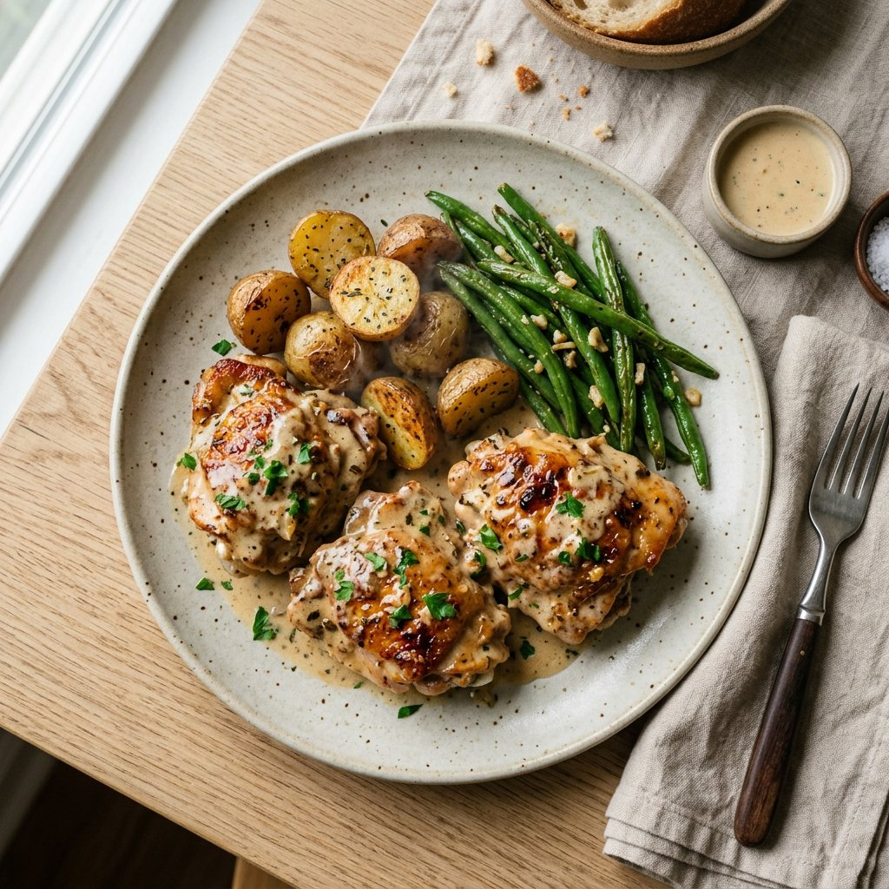
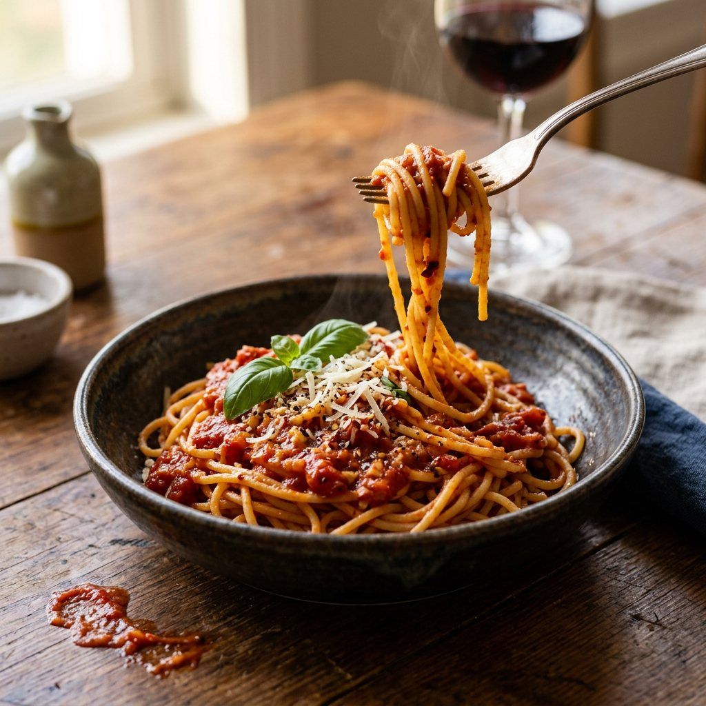
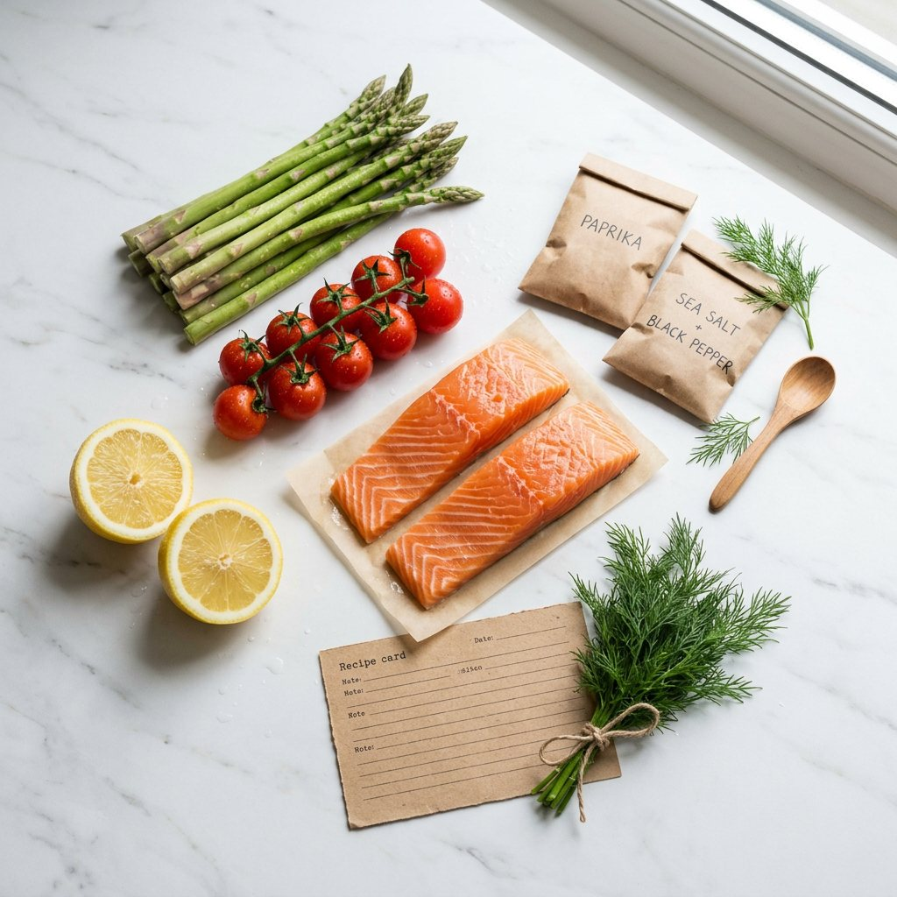
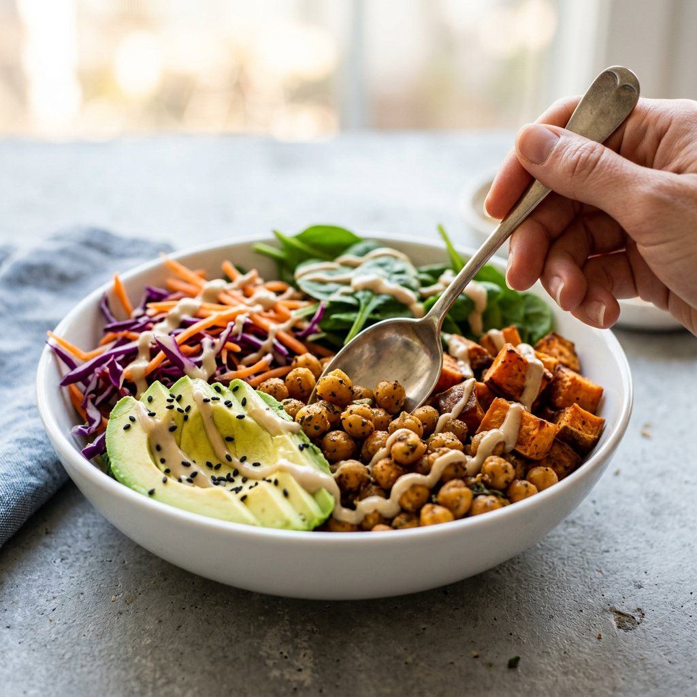
AI-generated. Every image on this page is made with generative AI. The dishes, people, kitchens and brand shown are not real, and no real brand or client is represented.
The people
Three lifestyle scenes: cooking with a child, a weeknight dinner with friends and opening a delivery box. People are where AI work gives itself away, so the prompts ask for candid moments, natural skin texture and hands that hold things naturally, and I check every hand, face and glass before an image goes in the set.
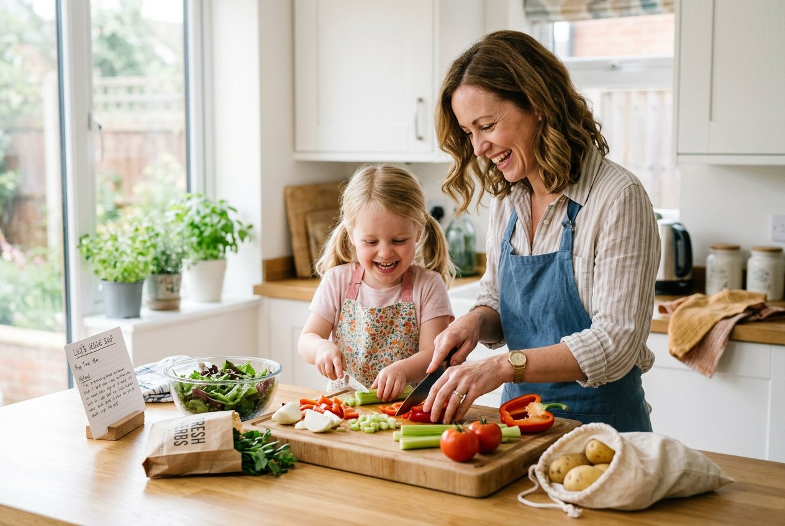
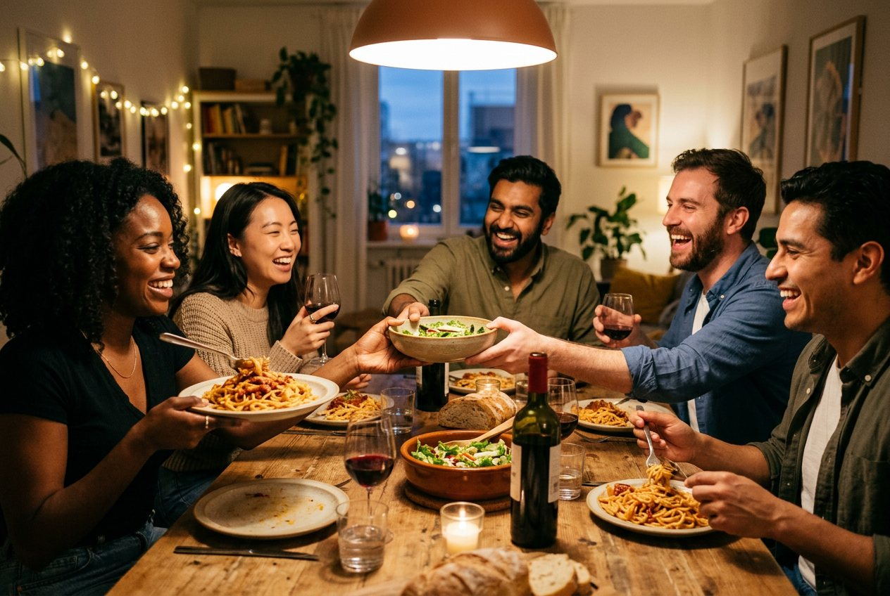
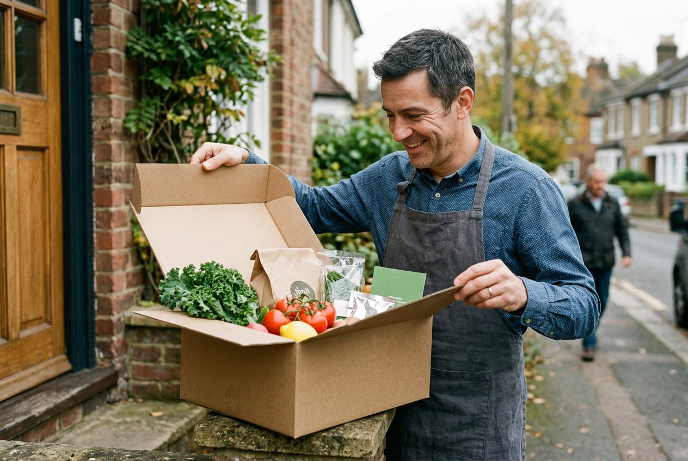
The series
A campaign is a set, not a single hero. Six shots share one kitchen, one family and one light: a wide establishing frame, three medium shots of each family member, a dinner scene and a hands detail. The same locked description opened every prompt, and only the action changed.
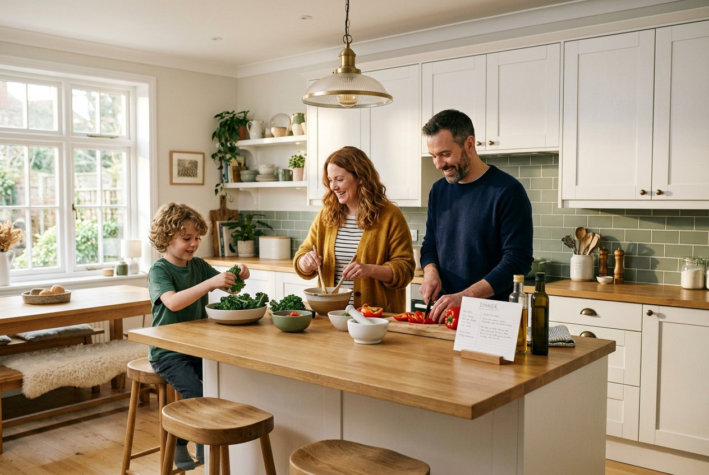
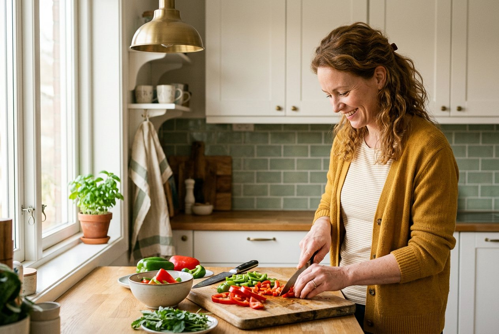
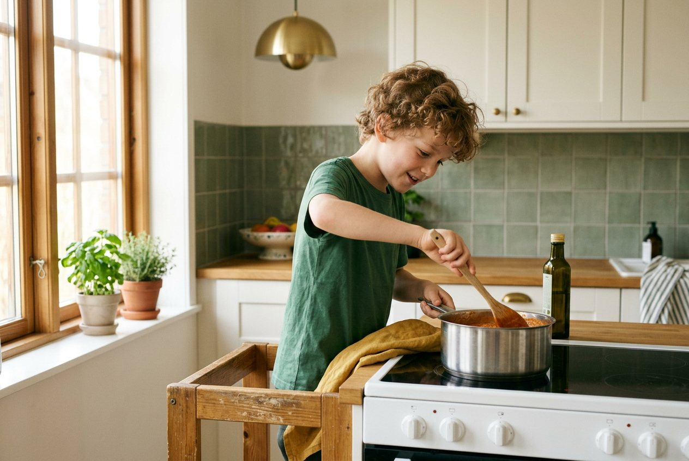
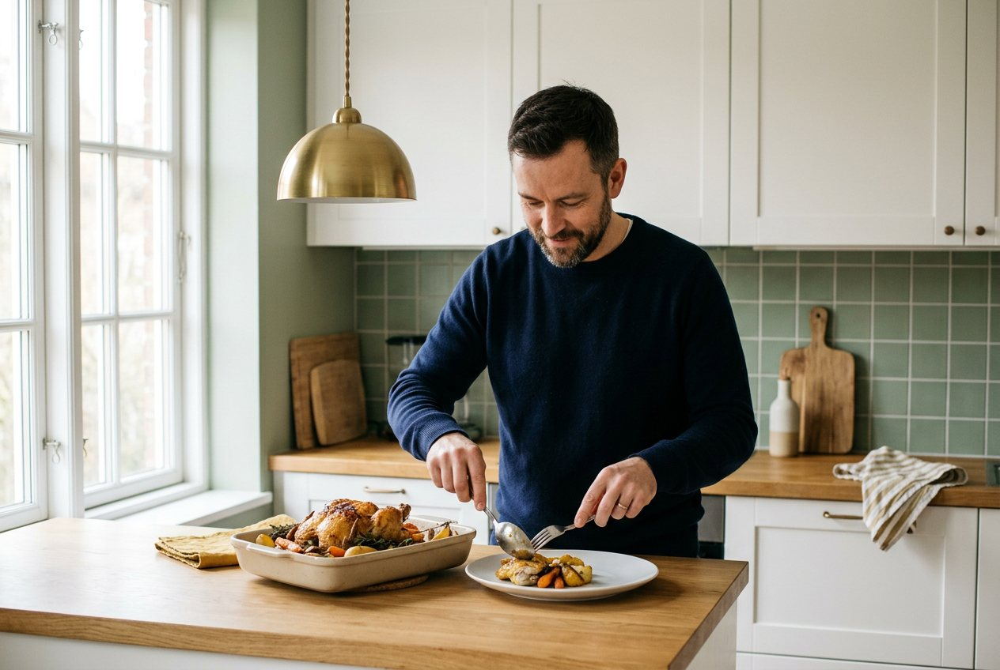
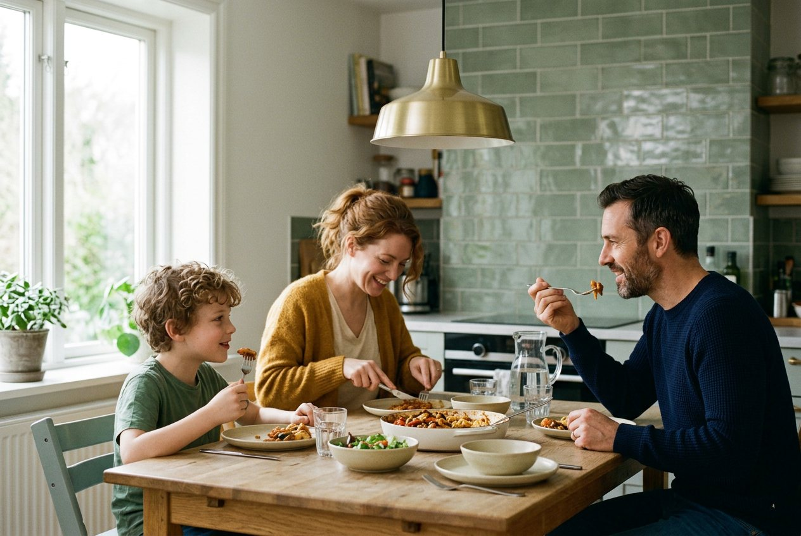
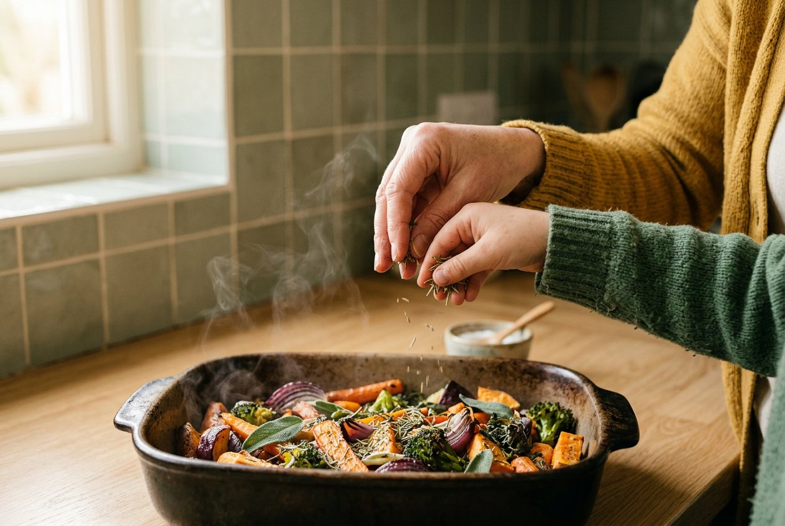
How it was made
One brief, a locked spec, then a prompt where only the action changes.
From brief to image
- Write the brief: dish or scene, camera position, light and mood.
- Lock what must not change: the setting, the people, the light and the palette.
- Write the prompt with a fixed part and a swappable action.
- Generate, then review each image against the realism checklist.
- Regenerate only what fails, and keep a note of why.
Where a person still matters
- Art direction: choosing the camera, the light and the one imperfection that sells the plate.
- Judgement: spotting a bad hand, a glass that floats or text that cannot be read.
- Production: the images are 1024 to 1264 px, so a campaign version needs upscaling and retouching before it ships.
The documentation
What turns a good result into something a team can reuse: a series bible, a prompt template and a realism checklist.
Locked for every shot
- Setting: bright Scandinavian-style kitchen, white shaker cabinets, light oak worktops, sage green tiles, brass pendant lamp, large window on the left.
- Family: father in his 40s, short dark hair, trimmed beard, navy sweater. Mother in her late 30s, wavy auburn hair, mustard cardigan. Son aged 8, curly light-brown hair, green t-shirt.
- Light and palette: soft warm morning light from the left. Sage, oak, cream, mustard.
Fixed part, swappable part
Highlighted is the only line that changes between shots. Everything else is pasted in unchanged.
Checked on every image
- Hands: five fingers, a natural grip, nothing fused to a utensil.
- Food: steam, sauce and browning behave, with one deliberate imperfection.
- Light: one direction, and the shadows agree.
- People: same hair, clothes and age across the set, natural skin.
- Scale: portions, plates and cutlery are plausible.
- Text: any lettering is readable or removed.
The images in use
Two quick layouts, built in HTML and CSS, to check the images work as campaign assets with copy on top. Fresh Table is a fictional brand.
Dinner, sorted.
Cook together tonight.
See this week's menuWhat I tested
A first pass with one image model, using the same prompt structure across all thirteen images. Here is what held and what did not.
What held
- The kitchen, tiles, pendant lamp and palette stayed the same across all six series shots.
- Each family member kept the same clothes and hair colour from shot to shot.
- Food texture was strong: sauce clinging to pasta, water droplets on vegetables, browned chicken.
What I caught
- Text is the weak point. The doorstep box has a garbled sticker and card, and the recipe card in the flat lay has nonsense numbers. Both would be removed or replaced in post.
- The mother's hair is tied up in the dinner shot but loose in the other series shots. A locked spec reduces drift, it does not remove it.
- Complex hand-offs, like passing a bowl across the friends' table, need the closest check.
What I would test next
The same brief across several image models, side by side, with a verdict on realism and consistency. A reference-image workflow to lock faces, which prompts alone cannot do. And short motion tests, to see which stills hold up when they move.
Using AI responsibly
Rules I would set for a studio before any of these images were published.
Say it is AI
Label AI-generated images clearly, here and in any campaign. Labelling rules differ by market and platform and keep changing, so I would check the current ones before publishing.
No real people or brands
The people shown do not exist, and the prompts name no real person, brand or logo. Any lettering that appears by accident is removed.
Show what is sold
AI food can look better than the real dish. For product shots, the image has to match what arrives in the box, so I would check portions and ingredients against the recipe.
What was delivered
13 images
Four food shots, three lifestyle scenes and a six-image series, all for a fictional meal-kit brand.
A series bible and prompt template
The locked description and the fixed and swappable prompt structure, ready to reuse for the next campaign.
A realism checklist
Six checks to run on every image, plus a log of what failed and why.
Problem solved
AI imagery that holds up as photography, stays consistent across a set and can be repeated by someone else.
A review that catches the tells
Texture, hands and light are checked on every image, and the failures are logged, so the set reads as photography.
One kitchen, one family
A locked series bible keeps the room, clothes and light the same across six shots.
Written down, so it repeats
A prompt template and checklist let a colleague make the next set without starting from scratch.